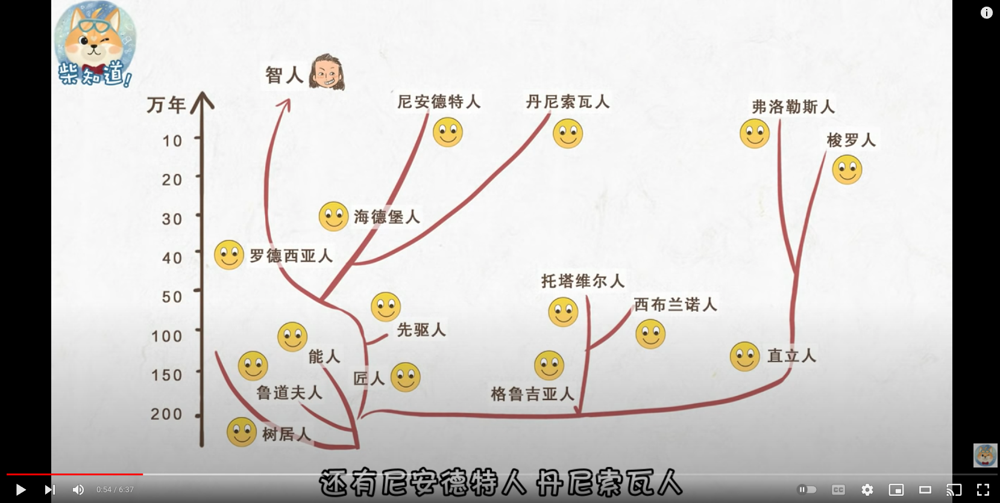

生物
人类

1802 年，德国巴格利亚，冯·史兰克发现寄生瓢虫。
1922 年 9 月，安得思发现最大的陆兽化石，巨犀（Paraceratherium）。
1923 年 7 月，安得思发现恐龙蛋化石。
1924 年 ～ 1925 年，安得思发现各类恐龙化石: 原角龙（Protoceratops），伶盗龙/迅猛龙（Velociraptor），绘龙（Pinacosaurus）。
1998 年，捷克弗兰格(Jaroslav Flegr)在猫咪实验中发现了弓形虫的秘密。